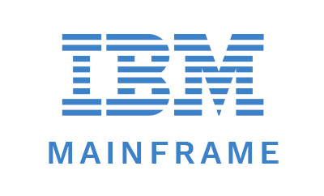
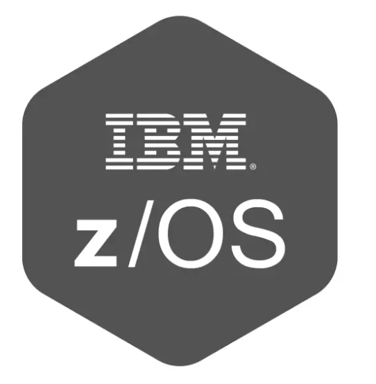
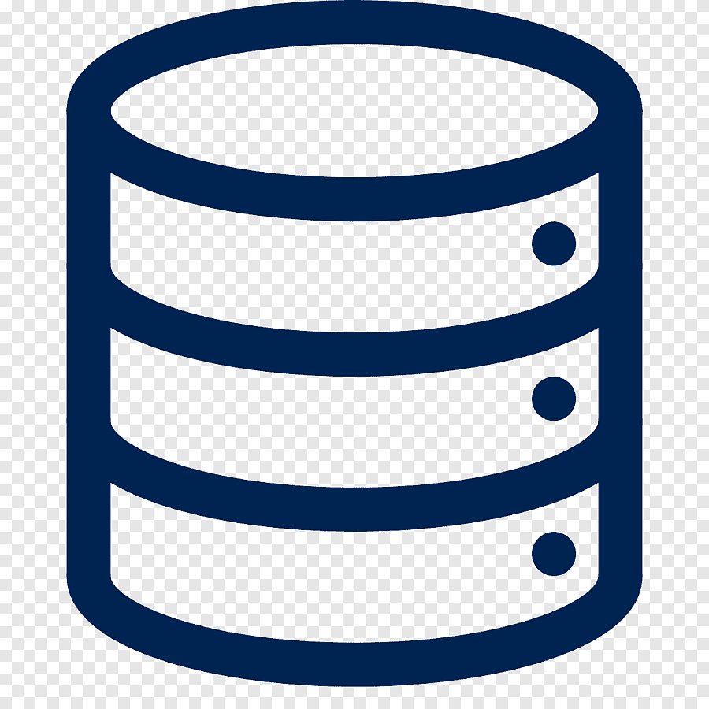

Piotr Zięba
Warszawa, Mazowieckie, Polska
 +48 517 394 324
+48 517 394 324
 piotr_zieba@icloud.com
piotr_zieba@icloud.com
O mnie
- inżynier wsparcia oprogramowania, administrator systemów i aplikacji
- rozwijający się w kierunku DevOpsa
- ze znajomością języka angielskiego na poziomie C1/C2
- z ponad 10 letnim doświadczeniem w pracy z klientem indywidualnym i biznesowym, w tym technicznym wsparciem klientów z Ameryki Północnej, Europy oraz Bliskiego Wschodu
Technologie
 Linux
Linux- Mainframe IBM
- z/OS
- Microsoft Windows
- Networking
- OSI model
 TCP/IP
TCP/IP HTML 5
HTML 5 CSS 3
CSS 3- JavaScript
 TypeScript
TypeScript- SQL
 MongoDB
MongoDB- Confluence
 Jira
Jira Bitbucket
Bitbucket Git
Git GitHub
GitHub- Docker
 Jenkins
Jenkins Grafana
Grafana- Kibana
- YAML
 Visual Studio Code
Visual Studio Code IntelliJ
IntelliJ
Moje oczekiwania
- Zarówno B2B jak i UoP
- Praca hybrydowa bądź 100% zdalna
Doświadczenie w IT
Administrator Aplikacji IT
PKO Bank Polski S.A.
Listopad 2023 – teraz | Warszawa, Polska
- Administrowanie bankową aplikacją Alnova działającą na systemach z/OS, Linux oraz Windows
- Kontrola zadań wykonywanych na Mainframie (SDSF, Control-M) oraz platformach otwartych w AutomateNow
- Współpraca z departamentami w zakresie testowania i wdrażania aplikacji i oprogramowania (lub pakietów) oraz ich zmian
- Obsługa zgłoszeń w HP Service Manageze oraz Jirze
- Prowadzenie dokumentacji eksploatacyjnej aplikacji, oprogramowania i urządzeń informatycznych w Confluence
- Dystrybucja i wdrażanie zmian programowo- parametrycznych dla aplikacji administrowanych przez zespół
Młodszy Inżynier Wsparcia Oprogramowania
Sages Sp. z o.o.
Październik 2022 – Czerwiec 2023 (9 miesięcy) | Warszawa, Polska
- Monitorowanie pracy środowisk produkcyjnych i testowych działających na serwerach Linuxowych
- Utrzymywanie systemów i zarządzanie ich konfiguracją (YAML)
- Debugowanie kodu, współpraca z zespołami developerskimi i analitycznym w zakresie wykrytych błędów
- Wsparcie wewnętrznych użytkowników systemu w bieżącej pracy i nowych wdrożeniach - zgłoszenia w Jirze
- Utrzymanie i aktualizacja dokumentacji technicznej systemów w Confluence
Administrator Systemów, Inżynier Wsparcia Oprogramowania, Wsparcie Techniczne
B2B
Wrzesień 2020 – teraz (3 lata 8 miesięcy) | Warszawa, Polska
- Instalacja, konfiguracja i aktualizacja systemów operacyjnych (Windows, Linux)
- Backup i przywracanie danych
- Diagnozowanie i rozwiązywanie problemów sprzętowych i programowych
- Konfiguracja i instalacja urządzeń IT
- Obsługa zgłoszeń wsparcia technicznego od klientów lub użytkowników
Języki
- Polski - Język ojczysty
- Angielski - Pełna biegłość w mowie i piśmie
- Rosyjski - Znajomość podstaw języka, umiejętność weryfikacji dokumentów zapisanych cyrylicą
Wykształcenie
- Dublin Institute of Technology - Rachunkowość i Finanse2011-2012
- Dublin Business School - Rachunkowość i Finanse2009-2010
- Szkoła Główna Handlowa - Stosunki międzynarodowe2003-2005
Wyrażam zgodę na przetwarzanie moich danych osobowych w celu rekrutacji zgodnie z art. 6 ust. 1 lit. a Rozporządzenia Parlamentu Europejskiego i Rady (UE) 2016/679 z dnia 27 kwietnia 2016 r. w sprawie ochrony osób fizycznych w związku z przetwarzaniem danych osobowych i w sprawie swobodnego przepływu takich danych oraz uchylenia dyrektywy 95/46/WE (ogólne rozporządzenie o ochronie danych).